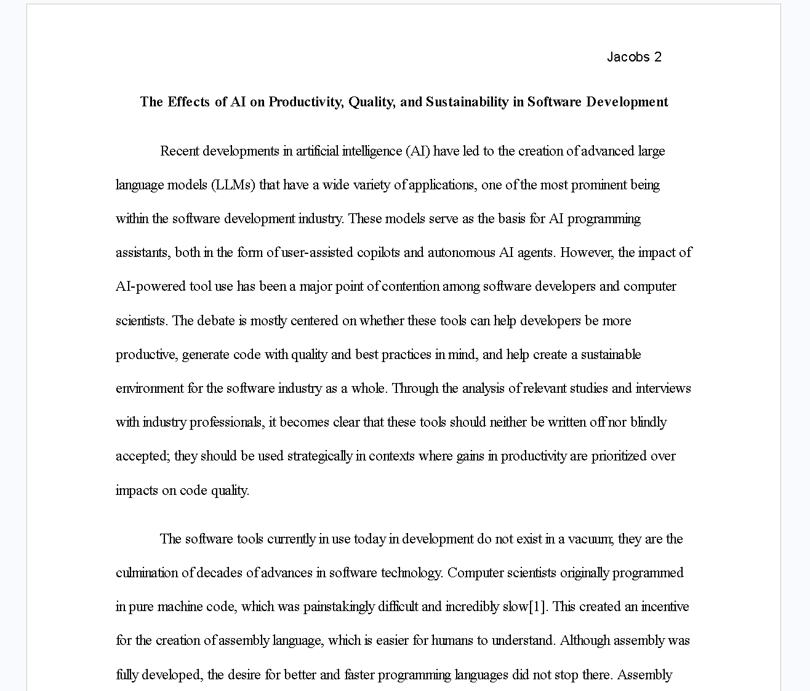

AI-Critical Research at a Glance

My name is Gavin Jacobs and this is my E-portfolio for the several projects
I have worked on this past semester. These projects are meant to look past
the overspeculation of AI's role in software development,and provide a realistic yet
nuanced view of the usage of these tools.